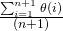
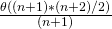

在前一篇文章中，我们讨论了渐近分析是如何克服单纯分析算法的问题的。在这篇文章中，我们将以线性搜索为例，用渐近分析进行分析。
我们可以用三种情况来分析一个算法:
- 最坏情况
- 平均情况
- 最好的情况
让我们考虑以下线性搜索的实现。1
2
3
4
5
6
7
8
9
10
11
12
13
14
15
16
17
18
19
20
21
22
23
24
25
26
27
28
29
30
31
32
33// C++ implementation of the approach
using namespace std;
// Linearly search x in arr[].
// If x is present then return the index,
// otherwise return -1
int search(int arr[], int n, int x)
{
int i;
for (i=0; i<n; i++)
{
if (arr[i] == x)
return i;
}
return -1;
}
// Driver Code
int main()
{
int arr[] = {1, 10, 30, 15};
int x = 30;
int n = sizeof(arr)/sizeof(arr[0]);
cout << x << " is present at index "
<< search(arr, n, x);
getchar();
return 0;
}
// This code is contributed
// by Akanksha Rai
Output:
1
30 is present at index 2
最坏情况分析(最常用)
在最坏的情况下，我们计算算法运行时间的上界。我们必须知道导致执行最多操作数的情况。对于线性搜索，最坏的情况是要搜索的元素(上面代码中的x)不在数组中。当x不存在时，search()函数将它与arr[]的所有元素逐个进行比较。因此,最坏情况下的时间复杂度线性搜索将Θ(n)。
平均情况(一般常用)
在平均情况分析中，我们使用所有可能的输入并计算所有输入的计算时间。将所有计算值相加并除以输入的总数。我们必须知道(或预测)病例的分布。对于线性搜索问题，我们假设所有的情况都是均匀分布的(包括x不在数组中的情况)。我们把所有的情况加起来然后除以(n+1)下面是平均案例时间复杂度的值。
Average Case Time = 
= 
= Θ(n)
最好情况(理想情况)
在最佳情况下，我们计算算法运行时间的下界。我们必须知道导致执行最少操作数的情况。在线性搜索问题中，x出现在第一个位置时是最佳情况。在最好的情况下操作的数量是不变的(不依赖于n)。所以时间复杂度在最好的情况下将Θ(1)
大多数时候，我们做最坏情况分析来分析算法。在最坏的情况下，我们保证算法运行时间的一个上界，这是一个很好的信息。
一般的案例分析在大多数实际案例中并不容易做到，而且很少有人去做。在平均情况分析中，我们必须知道(或预测)所有可能输入的数学分布。
最好的案例分析是虚假的。保证算法的下界不提供任何信息，因为在最坏的情况下，算法可能需要数年才能运行。
对于某些算法，所有的情况都是渐近相同的，即。没有最好和最坏的情况。例如，归并排序。归并排序是Θ(nLogn)操作在所有情况下。大多数其他排序算法都有最差和最好的情况。
例如，在典型的快速排序实现中(选择pivot作为角元素)，最坏的情况发生在输入数组已经排序时，最好的情况发生在主元素总是将数组分成两半时。
对于插入排序，最坏的情况发生在数组反向排序时，而最好的情况发生在数组按与输出相同的顺序排序时。